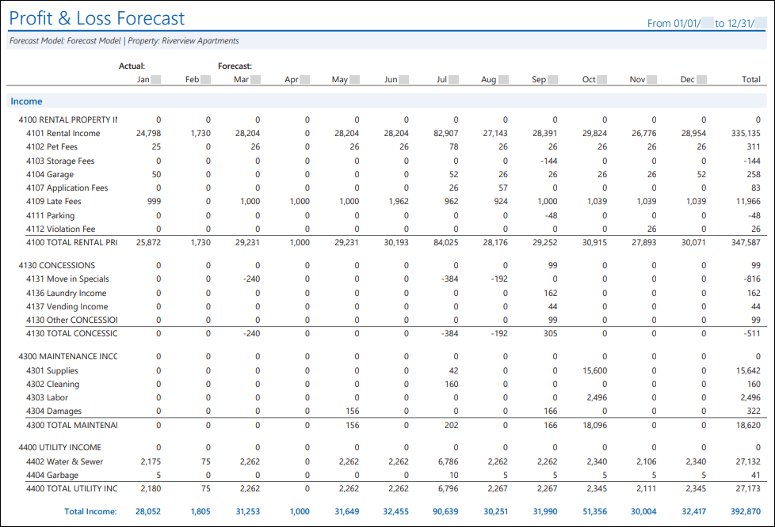
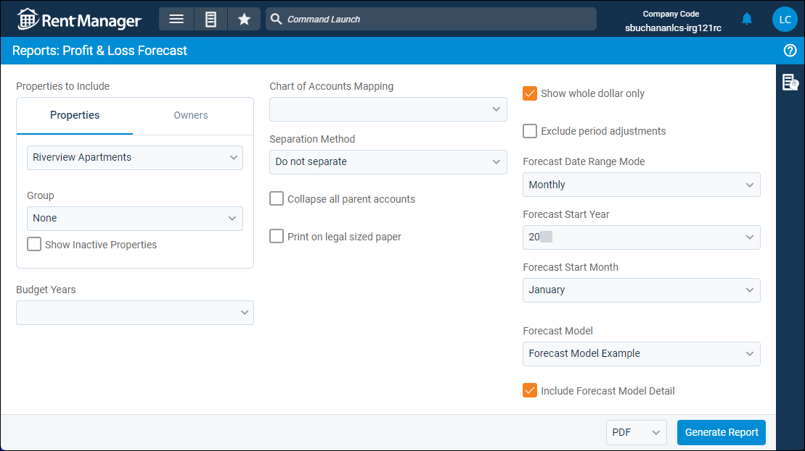
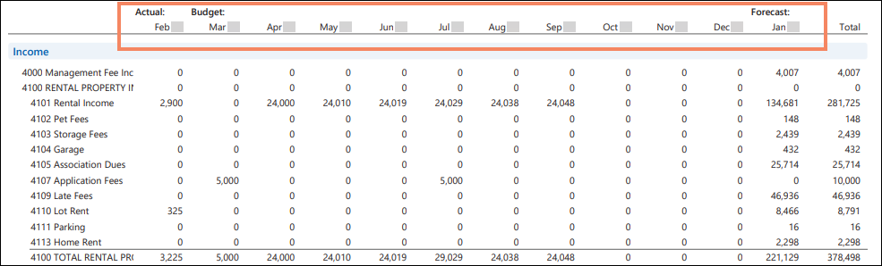
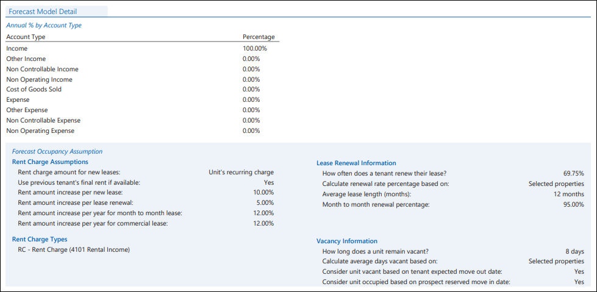

Source: https://rmxhelp.rentmanager.com/Topics/Express/Other/Reports/Profit-Loss-Forecast.htm
Profit & Loss Forecast (Report)
The Profit & Loss Forecast report examines a forecast model over a designated period of time to estimate your business's future profits and expenses. This P&L report uses the projections of the forecast model and general probability to predict financial data. The report can be filtered in a number of ways to easily view the projection you wish to see.
The value of the Profit & Loss Forecast report is dependent upon the data entered in Rent Manager. Some types of leases are ignored, such as weekly or daily leases, as well as leases not tied to a unit. Forecast model data can be based upon calculations performed on your historical data, such as average days a unit is vacant between occupants and the percentage of tenants that renew their leases.
More Information
The GL start date is considered the financial start date, so any transactions or information dated before the GL start date are not included in the report results.
Related Privileges
| Group | Privilege | Column |
|---|---|---|
| Letter/Email Templates/Reports/Packets | Run reports | Enabled |
| Run accounting reports | Enabled |
Additionally, on the Reports tab, you must have access to Profit & Loss Forecast.
For more information, refer to Control User Access.
Warning
The Profit & Loss Forecast is a unique report within Rent Manager. Each time the report is generated, the forecast model recalculates based upon general probability and the model's designated assumptions in vacancy, renewals, and costs, as well as the distance in the future that the report projects. Therefore, the results can be different every time the report is generated, even while using the same forecast model.
To view the Profit & Loss Forecast report, do the following:
-
Go to
 arrow_forward Financial Statements arrow_forward Profit & Loss arrow_forward Profit & Loss Forecast.
arrow_forward Financial Statements arrow_forward Profit & Loss arrow_forward Profit & Loss Forecast.
The Reports: Profit & Loss Forecast page displays. -
Adjust the report options as desired. Each option is described below.
-
Generate the report in your desired file format(s).
Related Preferences
Reports may look different depending on whether or not the Use modernized report style system preference is enabled. For more information, refer to General Report Options (System Preferences).

Report Options
The report options described below determine what data displays in the report.

Properties/Owners to Include
Check each property or owner to be included in the report. Alternatively, select a property or owner Group.
More Information
Only information related to the properties to which you have access displays. Your access to properties can be managed from your user account or on the property's details page. For more information, refer to Limit Access to a Property.
Optionally, check Show Inactive Properties to include properties that are no longer active.
Budget Years
After selecting a property or properties, the years for their budget data (if created) appear in this section with the current year's budget first in the list. Additional years also display, provided the years are consecutive with no missing years. For more information, refer to Budget (Page).
More Information
Past months display actual data from that month instead of budgeted data.
The current month or any future months use the budget data for the selected year(s).
Any other months not accounted for by actual data or budgeted data are projected by the forecast model. The projection is based on the same month of the previous year (e.g., ).
Chart of Accounts Mapping
To customize how general ledger accounts display in the report, select the name of the desired Chart Mapping. If no chart mappings are created, < None > displays. For more information, refer to Chart Accounts Mapping (Page).
Separation Method
This option becomes available when the Properties tab is selected.

Select one of the following options to determine how the report results are batched:
| Option | Description |
|---|---|
|
Do not separate |
All selected properties are combined into a single report. |
|
Separate by Properties |
Generates a separate report for each selected property. |
|
Separate by Units |
Generates a separate report for each unit associated with the selected properties. |
Collapse All Parent Accounts
Check to display only the total value of the parent account in the report. Otherwise, the value of the parent account and all subaccounts and their values.
Print on Legal Sized Paper
If checked, the report is adjusted to fit on legal-sized paper (8.5 × 14 inches) which provides additional space for the report results. Otherwise, the report is sized to fit onto a standard, letter-sized sheet of 8.5 x 11 paper.
Show Whole Dollar Only
If checked, general ledger account totals are rounded to the nearest whole dollar (0–49 cents is rounded down, and 50–99 cents is rounded up). Otherwise, the actual amount displays.
Exclude Period Adjustments
Check to remove any journal entries marked as a Period Adjustment from the report results.
Date Range
Select how far into the future to project results. Any time periods (month or quarter) fully in the past use actual data from that period with Actual displaying over those columns.
| Option | Description |
|---|---|
|
Forecast Date Range Mode |
Select a Forecast Date Range Mode duration: yearly, monthly, or quarterly. Your selection alters the last drop-down to coincide with your selection. |
|
Monthly |
View a financial projection for each month. The report begins on the first of the current month and project for one full year from that date (e.g., June 1, 2024–May 31, 2025). In the Forecast Start Year drop-down list, select the year to begin projections. In the Forecast Start Month drop-down list, select the month to begin projections. The Monthly selection starts the report on the first of the chosen month. |
|
Quarterly |
View a projection for each quarter, forecasting two years in the future from the quarter you choose. In the Forecast Start Year drop-down list, select the year to begin projections. In the Forecast Quarter drop-down list, select the quarter to begin projections. The Quarterly selection starts the report on the first day of the chosen quarter. |
|
Yearly |
View a projection per year. In the Forecast Start Year drop-down list, select the year to begin projections. In the Forecast End Year drop-down list, select the final year of the projections. The Yearly selection starts the report on January 1 of the chosen year. |
Forecast Model
Select a Forecast Model to provide the criteria for the projections in the report.
Optionally, check Include Forecast Model Detail to include a summary of the forecast model on the last page of the report generated in print view.
Report Results
The report results are described below including, if applicable, section, column, and subreport or tab descriptions.
Report Header
The report header displays the report name and key information selected in the report options, such as date information and which properties were examined in the report.
Column Descriptions
This report is organized by GL account type. Within each account type, the individual GL accounts are listed. All of the income, cost of goods sold, and expense accounts in your database display in the report and are grouped together. Additionally, there is a dedicated section for Net Income that displays the totals of all income account balances and all expense account balances at the end of the two date ranges, then subtracts the expense from the income to provide the net income for both date ranges.
Further, the report columns are grouped together by actual financial information, budgeted financial information, and projected financial information according to the selected forecast model and fiscal year.
More Information
Actual displays over data from your database was used. Budget displays over data from any selected budget. Forecast displays over data that is a projection of the financial possibilities.

The columns that display in the report are described below.
| Column | Description |
|---|---|
|
Chart Account |
The name and number for income, cost of goods sold, and expense GL accounts that have financial projections in the selected date range. |
|
Actual Monthly |
The projected or actual balance for the income, cost of goods sold, and expense GL accounts during the specified month, quarter, or year. Further, subtotals display for each GL account (e.g. Management Fee Income, Repair and Maintenance Expenses, etc.) for each month. |
|
Budget Monthly |
A column is created for each month after the selected report date. Each column displays the monthly total of your budget(s) for each general ledger account. |
|
Forecast Monthly |
The forecasted balance for the income, cost of goods sold, and expense GL accounts during the specified month, quarter, or year based on the forecast model. These totals are calculated by combining the data in the forecast model with an internal algorithm that introduces some variation to generate a projection. This projection reflects historical trends, offering insights into potential outcomes. |
|
Total |
The total of all months, quarters, or years for each GL account. |
Forecast Model Detail Subreport
The Forecast Model Detail subreport provides a summary of the options chosen in the forecast model that projections in the report were based on.
More Information
The Include Forecast Model Detail report option must be selected for this subreport to display on the last page of the generated report.

For detailed descriptions of each model field in the subreport, refer to Forecast Models Details (Page).